Released on March 3, 2010
(Next Release on March 10, 2010)
The Cars of the Future
Historically, vehicles with mechanical drivetrains powered by spark-ignited gasoline-fueled engines represent the vast majority of new light-duty vehicle sales. Diesel powered light-duty vehicles, which are widely used in Europe, briefly gained traction in the U.S. market, capturing 5.5 percent of light-duty vehicle sales in 1981, but quickly fell out of favor with U.S. consumers as quality and repair problems mounted. Today, a wide range of alternative vehicles are available or under consideration (see Table 1). Hybrid and diesel vehicles are currently increasing their market share despite often higher initial purchase prices as consumers become more aware of their fuel economy benefits, while manufacturers are selling more flex-fuel vehicles in response to incentives built into the structure of current fuel economy regulations. Other alternative vehicles include pure electric, plug-in hybrid electric, mild hybrid 1, natural gas, liquefied petroleum gas, and fuel cell powered vehicles, but these vehicles are not yet widely available to consumers.
Table 1. Alternative light-duty vehicle types |
|
| Alternative Vehicle Type | Description |
| Flex-fuel | Vehicles that run on gasoline or any gasoline-ethanol blend up to 85 percent ethanol. |
| Mild Hybrid | Vehicles that use a gasoline engine with a larger battery and electrically-powered auxiliary systems that allow the engine to be turned off when the vehicle is coasting or idle and then be quickly restarted. These vehicles are recharged using regenerative braking but do not provide electric traction to support motive power to the vehicle. |
| Hybrid Gasoline/Diesel Electric | Vehicles that combine a mixture of internal combustion and electric propulsion but have an extremely limited all-electric range and batteries cannot be recharged using grid power. |
| Plug-in Hybrid Electric | Vehicles that use battery power to drive the vehicle for some distance until a minimum level of battery power is reached, at which point the vehicle operates on a mixture of battery and internal combustion power. Plug-in hybrids can also be engineered to run in a blended mode of operation, where an onboard computer determines the most efficient use of battery and internal combustion power. The batteries can also be recharged from the grid by plugging a power cord into an electrical outlet. |
| Gaseous | Vehicles powered by compressed natural gas or liquefied petroleum gas exclusively or as a bi-fuel vehicle with gasoline. |
| Electric | Vehicles that operate by electric propulsion from batteries that use regenerative braking and are recharged exclusively using grid power. |
| Fuel Cell | Vehicles that use a fuel cell stack to convert a fuel such as hydrogen to electricity to drive the vehicle. |
In 2008, alternative light-duty vehicles (including diesel, flex-fuel, hybrid, pure electric, plug-in hybrid electric, mild hybrid, natural gas, liquefied petroleum gas, and fuel cell vehicles) accounted for approximately 13 percent of new light-duty vehicle sales, with flex-fuel vehicles representing about 80 percent of total alternative vehicle sales. The Annual Energy Outlook 2010 reference case projects that the market share of alternative vehicles will increase to 49 percent of new vehicle sales by 2035 due to the combination of more stringent corporate average fuel economy standards, the renewable fuel standard and higher fuel prices (See Figure 1). However, with continuing improvements in the fuel economy over time, conventional gasoline-powered vehicles are projected to retain the majority of sales.
Figure 1. Alternative light-duty vehicle sales projected
to reach nearly half of all new vehicle sales
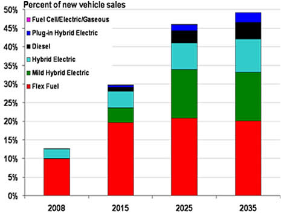
Source: Annual Energy Outlook 2010 Reference Case d111809a.
Any projections that extend over a 25-year horizon are, of course, highly uncertain. Technological breakthroughs, policies to mitigate greenhouse gas emissions, the availability of incentives for the adoption of alternative vehicles, and developments in oil markets are among the most important factors that will drive the future evolution of the actual sales mix for new light-duty vehicles. Oil and other energy markets will be closely watching as the situation unfolds.
Prices for Gasoline and Diesel Fuel Rise Again
For the second week in a row, the average price for regular gasoline increased in all major regions of the country, with the national average shooting up nearly a nickel to $2.70 per gallon. The U.S. average price was $0.77 above last year. The averages on the East Coast and in the Midwest each increased about four cents to $2.70 per gallon and $2.64 per gallon, respectively. The Gulf Coast price jumped over six cents to $2.60 per gallon. The Rocky Mountains experienced the smallest increase of any region, moving up about a penny to $2.63 per gallon. The price on the West Coast rose the most of any region, up seven cents to $2.94 per gallon. The price in California increased eight cents to $3.00 per gallon.
The U.S. average price for diesel fuel moved up three cents to settle at $2.86 per gallon, $0.77 above a year ago. The East Coast, Midwest, and Gulf Coast prices strengthened about three cents to $2.90 per gallon, 2.83 per gallon, and $2.82 per gallon, respectively. The smallest increase took place in the Rocky Mountains where the average went up about two cents to $2.85 per gallon. The West Coast price jumped four cents to $2.96 per gallon as California also moved up four cents, to $3.02 per gallon.
Propane Inventory Decline Tapers Off
After reaching a peak of 73 million barrels in October, an 11-year high, propane stocks have dropped precipitously through the winter heating season. The stock draw appears to have tapered off last week as total U.S. inventories fell 0.5 million barrels to 26.8 million barrels. The Gulf Coast region led the decline with a 1.7 million barrel draw. All other regions realized a gain in propane inventories. East Coast stocks built by 1.0 million barrels, the Midwest region increased by 0.2 million barrels, and the Rocky Mountain/West Coast region was slightly higher. Propylene non-fuel use inventories decreased their share of total propane/propylene stocks from 10.0 percent to 9.4 percent.
Residential Heating Oil and Propane Prices Decrease
Residential heating oil prices decreased slightly during the week ending March 1, 2010. The average residential heating oil price dropped 0.4 cent per gallon to reach 289.9 cents per gallon, 67.9 cents per gallon higher than the same time last year. Wholesale heating oil prices fell 3.6 cents per gallon to reach 212.2 cents per gallon, 76.4 cents per gallon higher than at this time last year.
The average residential propane price fell 0.7 cent per gallon to reach 267.7 cents per gallon. This was an increase of 40.3 cents per gallon compared to the same period last year. Wholesale propane prices dropped 3.3 cents per gallon to reach 134.7 cents per gallon. This was an increase of 58.9 cents per gallon when compared to the March 2, 2009 price of 75.8 cents per gallon.
_______________1 Mild hybrid electric vehicles are a subset of conventional gasoline vehicles. The AEO 2010 published tables do not include a separate category for mild hybrids. For purposes of this article, mild hybrids have been separated and subtracted from the total published conventional gasoline vehicle totals.
Text from the previous editions of “This Week In Petroleum” is now accessible through a link at the top right-hand corner of this page.
| Retail Prices (Cents Per Gallon) | |||||||
| 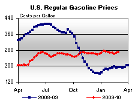 | 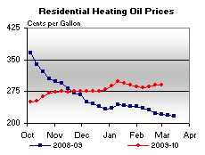 | ||||||
| 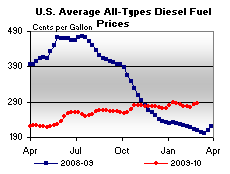 | 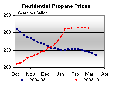 | ||||||
| Retail Data | Changes From | Retail Data | Changes From | ||||
| 03/01/10 | Week | Year | 03/01/10 | Week | Year | ||
| Gasoline | 270.2 | Heating Oil | 289.9 | ||||
| Diesel Fuel | 286.1 | Propane | 267.7 | ||||
| Spot Prices (Cents Per Gallon*) | |||||||||||||||||||||||||||||||||||
| 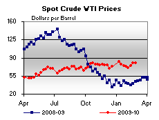 | 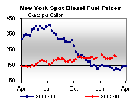 | ||||||||||||||||||||||||||||||||||
| 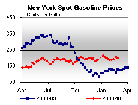 | 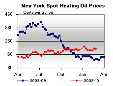 | ||||||||||||||||||||||||||||||||||
|
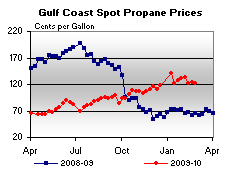 | ||||||||||||||||||||||||||||||||||
| *Note: Crude Oil WTI Price in Dollars per Barrel. | |||||||||||||||||||||||||||||||||||
| Stocks (Million Barrels) | |||||||
| 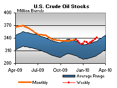 | 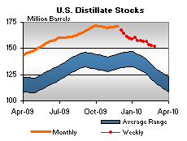 | ||||||
| 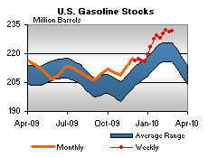 | 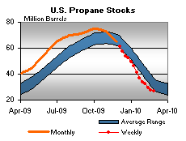 | ||||||
| Stocks Data | Changes From | Stocks Data | Changes From | ||||
| 02/26/10 | Week | Year | 02/26/10 | Week | Year | ||
| Crude Oil | 341.6 | Distillate | 151.8 | ||||
| Gasoline | 231.9 | Propane | 26.831 | ||||